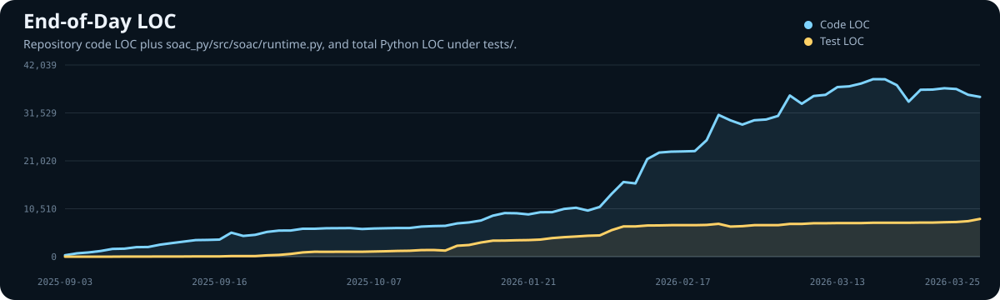
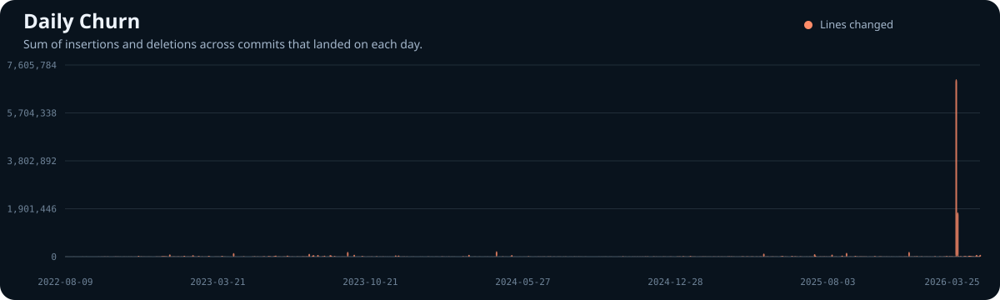
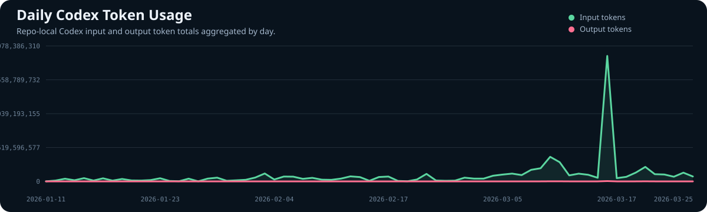

Latest Code LOC
0
As of 2026-03-25
Repository History
This static report is emitted by scripts/build_history_metrics_rollup.py.
The charts below are plain SVG assets with no client-side JavaScript.
Blue is repository code LOC with top-level __dp__.py folded in. Gold is total Python LOC under tests/.

Each bar is the sum of insertions and deletions from jj show --stat across commits that landed on that day.

Green shows aggregated input tokens and pink shows aggregated output tokens from repo-local sessions rooted at /home/adam/project/soac-profile, /home/adam/project/diet-python.
